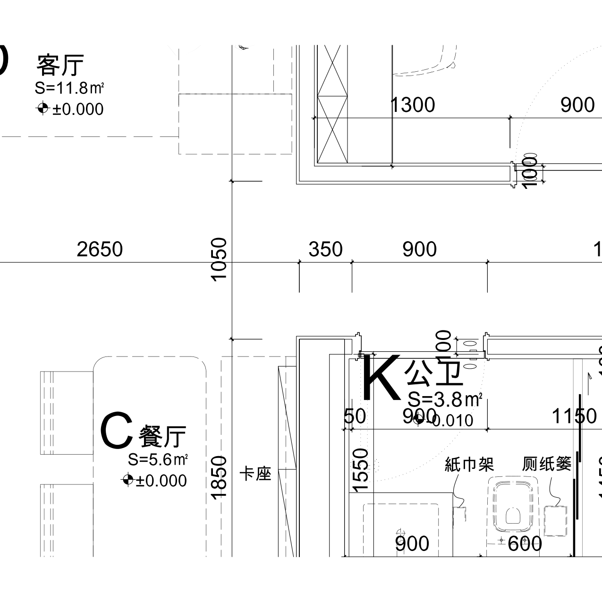
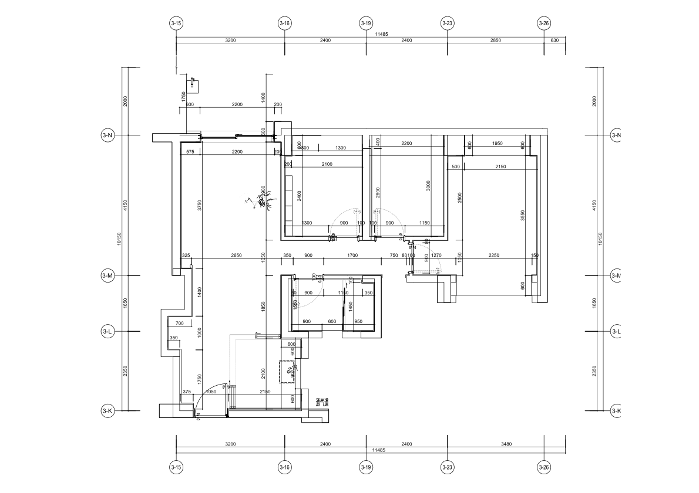

当前模型仅用于讨论空间关系，不能用于全屋定制下单、开料或施工放线。修复转角不等于已核准整个户型。
书房西南角、卫生间西北角（卡座上方过道端）均为连续直角。模型墙段在中心线处截断，造成墙厚交接缺口；已延伸墙段补齐。书房改造保留墙也同步修复，1.9m拟改门洞未作为开发商原图事实。

| 核对项 | DWG | 当前模型 | 结论 |
|---|---|---|---|
| 书房净宽 | 2100mm | 约2296mm | 不符，柜体可用宽度需重核 |
| 过道两侧墙面间距 | 1050mm | 约1027mm | 不符，未整体调整定位 |
| 厨房图示长宽 | 2150×2100mm | 约1910×2023mm | 不符，柜门分格只为适配示意 |
其余房间、墙厚、门洞及飘窗定位尚未形成全屋统一坐标校准闭环，不能标为已通过。已局部核过的窗宽不代表窗的位置及全部墙线均正确。

来源：01-02户型平面图-(交付)(1).dwg 的DXF转换文件，ZP墙体定位尺寸图层。图纸不能替代现场精装完成面复尺；照片只用于识别可见构造。